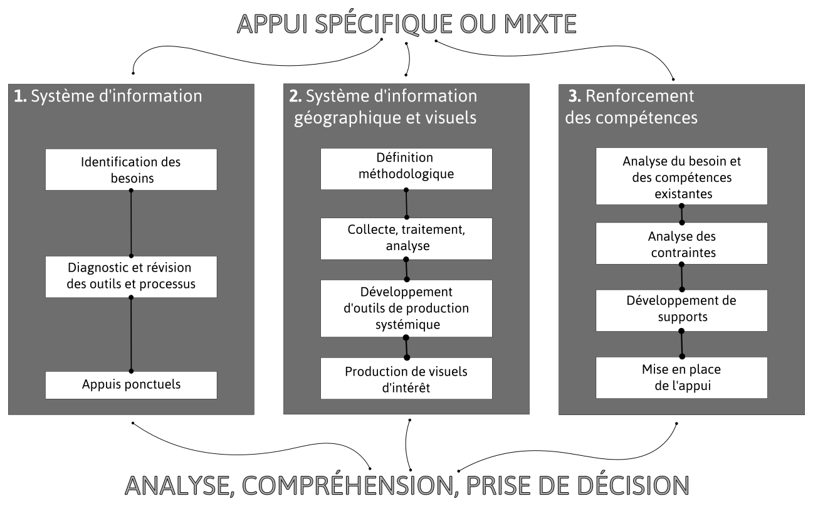

Avec un volume d’informations et de données de plus en plus important à gérer dans tous les aspects de l’action humanitaire : stratégie, programme, sécurité, communication, support, etc., les organisations ont tendance à développer et multiplier des processus et outils de gestion de données de plus en plus complexes tout en étant confrontées à de fortes limites structurelles : environnement technique contraignant, outils inadaptés, fossé technique entre sièges et terrains, compétences limitées en gestion de données.
Il est alors possible d’observer différents effets négatifs limitant la portée des démarches mises en place : gestion en silos, pertes d’informations ou création de cimetières de données, collectes partielles, analyses biaisées ou ignorées.
Aussi, le service proposé se décompose en trois approches complémentaires pour répondre à cette problématique et repositionner la gestion de données au service de l’action humanitaire.
1. Appuyer les processus de gestion de l’information pour disposer d’outils pertinents et assurer de la disponibilité et de la qualité des informations nécessaires à la prise de décision éclairée ;
2. Proposer des différents types de visuels à associer à ces jeux de données pour faciliter la lecture et l’appropriation de celles-ci, que ce soit via des supports cartographiques ou autres ;
3. Accompagner, former, renforcer les compétences des équipes afin que les structures et les personnes deviennent autonome vis-à-vis de ces processus.
